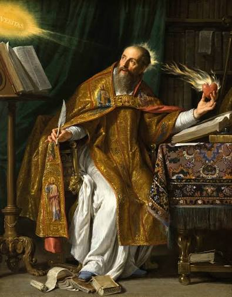
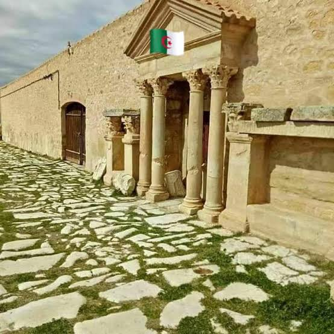
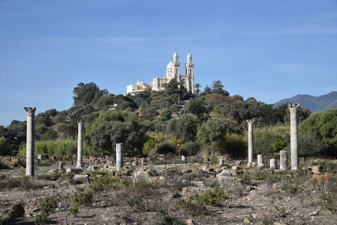
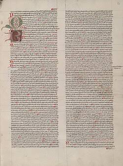
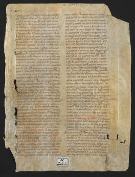
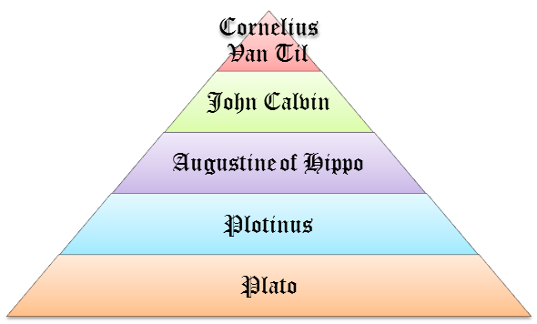

قرطاج وإسهاماتها في الحضارة الرومانية: النشاط الفكري – القديس أوغسطينوس
مقدمة
تميزت إفريقيا البروقنصلية بازدهار فكري تمثل في تعدد العلماء، من أبرزهم القديس أوغسطينوس.
فمن هو القديس أوغسطينوس؟ وما هي أفكاره؟
I العوامل المؤثرة في شخصية القديس أوغسطينوس
1. النشأة والظروف العامة
أ. نشأته
ينتمي أوغسطينوس إلى أصول نوميدية، ولد في تاغست (سوق هراس) من أب وثني وأم مسيحية، وعاش بين 345م و430م، ومات بهيبون (عنابة).
ب. الظروف المؤثرة في تكوينه
على المستوى الداخلي: أفضى الصراع على السلطة إلى تقسيم الإمبراطورية إلى جزئين شرقي وغربي منذ 395م، ومثلت روما عاصمة الجزء الغربي، بينما مثلت القسطنطينية عاصمة الجزء الشرقي، وأصبحت الديانة المسيحية الديانة الرسمية منذ 380م في عهد الإمبراطور تيودروس، ولكن المسيحيين انقسموا إلى فرق متناحرة.
على المستوى الخارجي: تعرضت الإمبراطورية الرومانية إلى هجومات البرابرة والقوطية والسلافية، وأسفرت عن سقوط روما سنة 410م.
2. تكوينه الفكري والاجتماعي وأبرز مؤلفاته
أ. تكوينه
درس أوغسطينوس بتاغست، ثم بجامعة قرطاج، وتشبع بالآداب اللاتينية كالخطابة والمسرح، وبفلسفة أفلاطون. ودرس الآداب والبلاغة ببلاط الإمبراطور في ميلانو، واعتنق المسيحية، وشغل منصب أسقف هيبونا حتى وفاته سنة 430م.
ب. مؤلفاته
ترك أوغسطينوس 252 كتابًا في 92 مجلدًا، وقد هيمن عليها الفكر الديني، مثل: «الاعترافات»، و«تعلم المسيحية»، و«المعلم»، و«مدينة الله».
II أهم أفكار القديس أوغسطينوس
1. المجال الديني
كان أوغسطينوس مسيحيًا كاثوليكيًا متمسكًا بأصول الدين المسيحي، فحارب الكفر والضلال بمقاومته للوثنية والفرق المسيحية المنشقة، ودافع عن وحدانية الله، وركز على الجانب الروحي للإيمان الذي اعتبره إلهامًا داخليًا، وتأثر بالفيلسوف اليوناني أفلاطون الذي اتجه إلى التصوف.
2. المجال الاجتماعي والسياسي
دعا إلى التسامح والوفاق والتآخي بين الأفراد والشعوب، واعتبر العدالة ركيزة أساسية يقوم عليها الوفاق الاجتماعي، كما اعتبر السلم قاعدة عامة لكل المجتمعات.
تميز أوغسطينوس بتفكير إنساني، لذلك تأثر به عديد الفلاسفة مثل ديكارت.
3. المجال التعليمي
أكد على تطوير أساليب التعلم، مثل: إصلاح الأخطاء، وضرورة التواصل بين المعلم والمتعلم، كما اعتبر أن الحيرة وجدية التفكير الطريقة المثلى للتعلم وللوصول إلى الحقيقة.
خاتمة
مثل القديس أوغسطينوس مثالًا للتسامح الفكري، ومرجعًا للمفكرين المسيحيين في العصور الوسطى والحديثة.
📖 تعريفات
👤 شخصيات
- القديس أوغسطينوس: مفكر مسيحي من أصول نوميدية، ولد في تاغست (سوق هراس) من أب وثني وأم مسيحية، وعاش بين 345م و430م ومات بهيبون (عنابة). درس بجامعة قرطاج وتشبع بالآداب اللاتينية وفلسفة أفلاطون، واعتنق المسيحية وشغل منصب أسقف هيبونا حتى وفاته. ترك 252 كتابًا في 92 مجلدًا، من أبرزها «الاعترافات» و«مدينة الله». تميز بتفكير إنساني وتسامح فكري، ويُعدّ مرجعًا للمفكرين المسيحيين في العصور الوسطى والحديثة.
- أفلاطون: فيلسوف يوناني اتجه إلى التصوف، تأثر به القديس أوغسطينوس في الجانب الروحي للإيمان الذي اعتبره إلهامًا داخليًا.
- ديكارت: فيلسوف تأثر بالتفكير الإنساني للقديس أوغسطينوس.
- الإمبراطور تيودروس: إمبراطور روماني، في عهده أصبحت الديانة المسيحية الديانة الرسمية منذ 380م.
🌍 دول ومناطق
- تاغست (سوق هراس): مسقط رأس القديس أوغسطينوس، وفيها تلقى تكوينه الأول.
- هيبون (عنابة): المدينة التي شغل فيها القديس أوغسطينوس منصب أسقف حتى وفاته سنة 430م.
- نوميديا: الأصول التي ينتمي إليها القديس أوغسطينوس.
- روما: عاصمة الجزء الغربي من الإمبراطورية الرومانية بعد تقسيمها سنة 395م، وسقطت سنة 410م إثر هجومات البرابرة والقوطية والسلافية.
- القسطنطينية: عاصمة الجزء الشرقي من الإمبراطورية الرومانية بعد تقسيمها سنة 395م.
- ميلانو: المدينة التي درس فيها أوغسطينوس الآداب والبلاغة ببلاط الإمبراطور، وفيها اعتنق المسيحية.
- قرطاج: المدينة التي تابع فيها أوغسطينوس تكوينه الجامعي وتشبع بالآداب اللاتينية كالخطابة والمسرح.
⚔️ أحداث هامة
- المسيحية ديانة رسمية (380م): أصبحت الديانة المسيحية الديانة الرسمية للإمبراطورية الرومانية منذ 380م في عهد الإمبراطور تيودروس، ولكن المسيحيين انقسموا إلى فرق متناحرة.
- تقسيم الإمبراطورية (395م): أفضى الصراع على السلطة إلى تقسيم الإمبراطورية الرومانية إلى جزئين شرقي وغربي منذ 395م، فمثلت روما عاصمة الجزء الغربي والقسطنطينية عاصمة الجزء الشرقي.
- سقوط روما (410م): أسفرت هجومات البرابرة والقوطية والسلافية على الإمبراطورية الرومانية عن سقوط روما سنة 410م.
📅 سنوات وفترات
- 345م – 430م: الفترة التي عاش فيها القديس أوغسطينوس.
- 380م: أصبحت الديانة المسيحية الديانة الرسمية للإمبراطورية الرومانية في عهد الإمبراطور تيودروس.
- 395م: تقسيم الإمبراطورية الرومانية إلى جزئين شرقي وغربي.
- 410م: سقوط روما إثر هجومات البرابرة والقوطية والسلافية.
- 430م: وفاة القديس أوغسطينوس بهيبون (عنابة) وهو يشغل منصب أسقف هيبونا.
📌 أخرى
- الاعترافات: من أبرز مؤلفات القديس أوغسطينوس، وقد هيمن عليها الفكر الديني.
- مدينة الله: من أبرز مؤلفات القديس أوغسطينوس، وقد هيمن عليها الفكر الديني.
- تعلم المسيحية: من أبرز مؤلفات القديس أوغسطينوس، وقد هيمن عليها الفكر الديني.
- المعلم: من أبرز مؤلفات القديس أوغسطينوس، وقد هيمن عليها الفكر الديني.
- الفكر الإنساني: سمة مميزة لتفكير القديس أوغسطينوس، تأثر بها عديد الفلاسفة مثل ديكارت، وتتجلى في دعوته إلى التسامح والوفاق والتآخي والعدالة والسلم.
🗺️ خرائط ومعطيات مصورة





